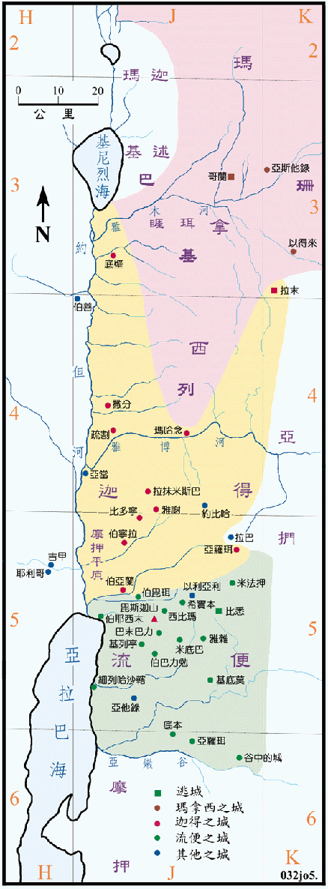

| 圣经 | 说明 |
|---|---|
| 书13:8-14 | 河东两个半支派的疆界。 |
| 书13:15-21 | 流便支派的地业。 |
| 书13:24-28 | 迦得支派的地业。 |
| 书13:29-31，17:1-6 | 玛拿西半支派的地业。 |
在民数记第卅二章中，摩西已分了地给两个半支派，但三者之间似乎没有明确的疆界，而且迦得和流便两个支派的城互相混杂，但在本节中，则将原属於迦得支派的底本、亚罗珥和亚他录，改属流便支派所有。这样一来，流便和迦得两支派的领土就十分完整，边界也清楚。迦得拥有雅博河以北的约但河谷，又有基列山东边的拉末城，但玛拿西确分得基列的一半，所以两侧都是迦得的地，看起来很奇怪。